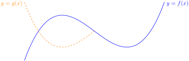

Section 6.2 Basic properties of the definite integral
When we studied limits and derivatives, we developed methods for taking limits or derivatives of “complicated functions” like \(f(x)=x^2 + \sin(x)\) by understanding how limits and derivatives interact with basic arithmetic operations like addition and subtraction. This allowed us to reduce the problem into one of of computing derivatives of simpler functions like \(x^2\) and \(\sin(x)\text{.}\) Along the way we established simple rules such as
Some of these rules have very natural analogues for integrals and we discuss them below. Unfortunately the analogous rules for integrals of products of functions or integrals of compositions of functions are more complicated than those for limits or derivatives. We discuss those rules at length in subsequent sections. For now let us consider some of the simpler rules of the arithmetic of integrals.
Theorem 6.2.1. Arithmetic of Integration.
Let \(a,b\) and \(A,B,C\) be real numbers. Let the functions \(f(x)\) and \(g(x)\) be integrable on an interval that contains \(a\) and \(b\text{.}\) Then
Combining these three rules we have
\begin{align*} \text{(d)}&& \int_a^b \left( Af(x) + Bg(x) \right)\dee{x} &= A\int_a^b f(x)\dee{x} + B\int_a^b g(x)\dee{x}\\ \end{align*}That is, integrals depend linearly on the integrand.
\begin{align*} \text{(e)}&& \int_a^b \dee{x} = \int_a^b 1 \cdot \dee{x} &= b-a \end{align*}It is not too hard to prove this result from the definition of the definite integral. Additionally we only really need to prove (d) and (e) since
- (a) follows from (d) by setting \(A=B=1\text{,}\)
- (b) follows from (d) by setting \(A=1, B=-1\text{,}\) and
- (c) follows from (d) by setting \(A=C, B=0\text{.}\)
Proof.
As noted above, it suffices for us to prove (d) and (e). Since (e) is easier, we will start with that. It is also a good warm-up for (d).
- The definite integral in (e), \(\int_a^b 1 \dee{x}\text{,}\) can be interpreted geometrically as the area of the rectangle with height 1 running from \(x=a\) to \(x=b\text{;}\) this area is clearly \(b-a\text{.}\) We can also prove this formula from the definition of the integral (Definition 6.1.9):\begin{align*} \int_a^b\dee{x} &=\lim_{n\rightarrow\infty}\sum_{i=1}^n f(x_{i,n}^*)\,\frac{b-a}{n} &\text{by definition}\\ &=\lim_{n\rightarrow\infty}\sum_{i=1}^n 1\,\frac{b-a}{n} &\text{since $f(x)=1$}\\ &=\lim_{n\rightarrow\infty}(b-a) \sum_{i=1}^n \frac{1}{n} &\text{since $a,b$ are constants}\\ &=\lim_{n\rightarrow\infty}(b-a)\\ &=b-a \end{align*}as required.
- To prove (d) let us start by defining \(h(x) = Af(x)+Bg(x)\) and then we need to express the integral of \(h(x)\) in terms of those of \(f(x)\) and \(g(x)\text{.}\) We use Definition 6.1.9 and some algebraic manipulations 1 to arrive at the result.\begin{align*} \int_a^bh(x) \dee{x} &= \sum_{i=1}^n h(x_{i,n}^*)\cdot\frac{b-a}{n}\\ &\hskip0.5in\text{by Definition }\knowl{./knowl/def_INTintegral.html}{\text{6.1.9}}\\ &= \sum_{i=1}^n \left(Af(x_{i,n}^*)+Bg(x_{i,n}^*) \right)\cdot \frac{b-a}{n}\\ &= \sum_{i=1}^n \left(Af(x_{i,n}^*)\cdot \frac{b-a}{n} + Bg(x_{i,n}^*)\cdot \frac{b-a}{n} \right)\\ &= \left(\sum_{i=1}^n Af(x_{i,n}^*)\cdot \frac{b-a}{n}\right) + \left(\sum_{i=1}^n Bg(x_{i,n}^*)\cdot \frac{b-a}{n}\right)\\ &\hskip0.5in\text{by Theorem }\knowl{./knowl/thm_INTsummationArith.html}{\text{6.1.5}}\text{(b)}\\ &= A\left(\sum_{i=1}^n f(x_{i,n}^*)\cdot \frac{b-a}{n}\right) + B\left(\sum_{i=1}^n g(x_{i,n}^*)\cdot \frac{b-a}{n}\right)\\ &\hskip0.5in\text{by Theorem }\knowl{./knowl/thm_INTsummationArith.html}{\text{6.1.5}}\text{(a)}\\ &= A \int_a^b f(x) \dee{x} + B \int_a^b g(x) \dee{x}\\ &\hskip0.5in\text{by Definition }\knowl{./knowl/def_INTintegral.html}{\text{6.1.9}} \end{align*}as required.
Using this Theorem we can integrate sums, differences and constant multiples of functions we know how to integrate. For example:
Example 6.2.2. The integral of a sum.
In Example 6.1.1 we saw that \(\int_0^1 e^x\dee{x}=e-1\text{.}\) So
When we gave the formal definition of \(\int_a^b f(x) \dee{x}\) in Definition 6.1.9 we explained that the integral could be interpreted as the signed area between the curve \(y=f(x)\) and the \(x\)-axis on the interval \([a,b]\text{.}\) In order for this interpretation to make sense we required that \(a \lt b\text{,}\) and though we remarked that the integral makes sense when \(a \gt b\) we did not explain any further. Thankfully there is an easy way to express the integral \(\int_a^b f(x)\dee{x}\) in terms of \(\int_b^a f(x)\dee{x}\) — making it always possible to write an integral so the lower limit of integration is less than the upper limit of integration. Theorem 6.2.3, below, tell us that, for example, \(\int_7^3 e^x\dee{x} = - \int_3^7 e^x\dee{x}\text{.}\) The same theorem also provides us with two other simple manipulations of the limits of integration.
Theorem 6.2.3. Arithmetic for the Domain of Integration.
Let \(a,b,c\) be real numbers. Let the function \(f(x)\) be integrable on an interval that contains \(a\text{,}\) \(b\) and \(c\text{.}\) Then
The proof of this statement is not too difficult.
Proof.
Let us prove the statements in order.
- Consider the definition of the definite integral\begin{align*} \int_a^b f(x) \dee{x} &= \lim_{n \to \infty} \sum_{i=1}^n f(x_{i,n}^*)\cdot\frac{b-a}{n} \end{align*}If we now substitute \(b=a\) in this expression we have\begin{align*} \int_a^a f(x) \dee{x} &= \lim_{n \to \infty} \sum_{i=1}^n f(x_{i,n}^*)\cdot\underbrace{\frac{a-a}{n}}_{=0}\\ &= \lim_{n \to \infty} \sum_{i=1}^n \underbrace{f(x_{i,n}^*)\cdot 0}_{=0}\\ &= \lim_{n \to \infty} 0\\ &= 0 \end{align*}as required.
-
Consider now the definite integral \(\int_a^b f(x) \dee{x}\text{.}\) We will sneak up on the proof by first examining Riemann sum approximations to both this and \(\int_b^a f(x)\dee{x}\text{.}\) The midpoint Riemann sum approximation to \(\int_a^b f(x)\dee{x}\) with \(4\) subintervals (so that each subinterval has width \(\frac{b-a}{4}\)) is
\begin{align*} &\left\{f\big(a+\tfrac{1}{2}\tfrac{b-a}{4}\big) +f\big(a+\tfrac{3}{2}\tfrac{b-a}{4}\big) +f\big(a+\tfrac{5}{2}\tfrac{b-a}{4}\big) + f\big(a+\tfrac{7}{2}\tfrac{b-a}{4}\big) \right\}\cdot\tfrac{b-a}{4}\\ &=\left\{f\big(\tfrac{7}{8}a+\tfrac{1}{8}b\big) +f\big(\tfrac{5}{8}a+\tfrac{3}{8}b\big) +f\big(\tfrac{3}{8}a+\tfrac{5}{8}b\big) +f\big(\tfrac{1}{8}a+\tfrac{7}{8}b\big)\right\}\cdot\tfrac{b-a}{4} \end{align*}Now we do the same for \(\int_b^a f(x)\dee{x}\) with \(4\) subintervals. Note that \(b\) is now the lower limit on the integral and \(a\) is now the upper limit on the integral. This is likely to cause confusion when we write out the Riemann sum, so we'll temporarily rename \(b\) to \(A\) and \(a\) to \(B\text{.}\) The midpoint Riemann sum approximation to \(\int_A^B f(x)\dee{x}\) with \(4\) subintervals is
\begin{align*} &\Big\{f\big(A+\tfrac{1}{2}\tfrac{B-A}{4}\big) +f\big(A+\tfrac{3}{2}\tfrac{B-A}{4}\big) +f\big(A+\tfrac{5}{2}\tfrac{B-A}{4}\big)\\ &\hskip2.5in +f\big(A+\tfrac{7}{2}\tfrac{B-A}{4}\big)\Big\}\cdot \tfrac{B-A}{4}\\ &=\Big\{f\big(\tfrac{7}{8}A+\tfrac{1}{8}B\big) +f\big(\tfrac{5}{8}A+\tfrac{3}{8}B\big) +f\big(\tfrac{3}{8}A+\tfrac{5}{8}B\big)\\ &\hskip2.5in+f\big(\tfrac{1}{8}A+\tfrac{7}{8}B\big)\Big\}\cdot \tfrac{B-A}{4}\\ \end{align*}Now recalling that \(A=b\) and \(B=a\text{,}\) we have that the midpoint Riemann sum approximation to \(\int_b^a f(x)\dee{x}\) with \(4\) subintervals is
\begin{align*} &\left\{f\big(\tfrac{7}{8}b+\tfrac{1}{8}a\big) +f\big(\tfrac{5}{8}b+\tfrac{3}{8}a\big) +f\big(\tfrac{3}{8}b+\tfrac{5}{8}a\big) +f\big(\tfrac{1}{8}b+\tfrac{7}{8}a\big)\right\}\cdot \tfrac{a-b}{4} \end{align*}Thus we see that the Riemann sums for the two integrals are nearly identical — the only difference being the factor of \(\frac{b-a}{4}\) versus \(\frac{a-b}{4}\text{.}\) Hence the two Riemann sums are negatives of each other.
The same computation with \(n\) subintervals shows that the midpoint Riemann sum approximations to \(\int_b^a f(x)\dee{x}\) and \(\int_a^b f(x)\dee{x}\) with \(n\) subintervals are negatives of each other. Taking the limit \(n\rightarrow\infty\) gives \(\int_b^a f(x)\dee{x}= -\int_a^b f(x)\dee{x}\text{.}\)
-
Finally consider (c) — we will not give a formal proof of this, but instead will interpret it geometrically. Indeed one can also interpret (a) geometrically. In both cases these become statements about areas:
\begin{gather*} \int_a^a f(x)\dee{x}=0\qquad\text{and}\qquad \int_a^b f(x)\dee{x}= \int_a^c f(x)\dee{x} + \int_c^b f(x)\dee{x} \end{gather*}are
\begin{gather*} \text{Area}\big\{\ (x,y)\ \big|\ a\le x\le a,\ 0\le y\le f(x)\ \big\}=0 \end{gather*}and
\begin{align*} &\text{Area}\big\{\ (x,y)\ \big|\ a\le x\le b,\ 0\le y\le f(x)\ \big\}\\ &\hskip0.25in=\text{Area}\big\{\ (x,y)\ \big|\ a\le x\le c,\ 0\le y\le f(x)\ \big\}\\ &\hskip0.5in +\text{Area}\big\{\ (x,y)\ \big|\ c\le x\le b,\ 0\le y\le f(x)\ \big\} \end{align*}respectively. Both of these geometric statements are intuitively obvious. See the figures below.


Note that we have assumed that \(a\leq c \leq b\) and that \(f(x)\geq 0\text{.}\) One can remove these restrictions and also make the proof more formal, but it becomes quite tedious and less intuitive.
Remark 6.2.4.
For notational simplicity, let's assume that \(a\le c\le b\) and \(f(x)\ge 0\) for all \(a\le x\le b\text{.}\) The geometric interpretations of the identities
are
and
respectively. Both of these geometric statements are intuitively obvious. See the figures below. We won't give a formal proof.
So we concentrate on the formula \(\int_b^a f(x)\dee{x}= -\int_a^b f(x)\dee{x}\text{.}\) The midpoint Riemann sum approximation to \(\int_a^b f(x)\dee{x}\) with \(4\) subintervals (so that each subinterval has width \(\frac{b-a}{4}\)) is
We're now going to write out the midpoint Riemann sum approximation to \(\int_b^a f(x)\dee{x}\) with \(4\) subintervals. Note that \(b\) is now the lower limit on the integral and \(a\) is now the upper limit on the integral. This is likely to cause confusion when we write out the Riemann sum, so we'll temporarily rename \(b\) to \(A\) and \(a\) to \(B\text{.}\) The midpoint Riemann sum approximation to \(\int_A^B f(x)\dee{x}\) with \(4\) subintervals is
Now recalling that \(A=b\) and \(B=a\text{,}\) we have that the midpoint Riemann sum approximation to \(\int_b^a f(x)\dee{x}\) with \(4\) subintervals is
The curly brackets in (\(\star\)) and (\(\star\star\)) are equal to each other — the terms are just in the reverse order. The factors multiplying the curly brackets in (\(\star\)) and (\(\star\star\)), namely \(\frac{b-a}{4}\) and \(\frac{a-b}{4}\text{,}\) are negatives of each other, so (\(\star\star\))\(=-\)(\(\star\)). The same computation with \(n\) subintervals shows that the midpoint Riemann sum approximations to \(\int_b^a f(x)\dee{x}\) and \(\int_a^b f(x)\dee{x}\) with \(n\) subintervals are negatives of each other. Taking the limit \(n\rightarrow\infty\) gives \(\int_b^a f(x)\dee{x}= -\int_a^b f(x)\dee{x}\text{.}\)
Example 6.2.5. Revisiting Example 6.1.14.
Back in Example 6.1.14 we saw that when \(b \gt 0\) \(\int_0^b x\dee{x} =\frac{b^2}{2}\text{.}\) We'll now verify that \(\int_0^b x\dee{x} =\frac{b^2}{2}\) is still true when \(b=0\) and also when \(b \lt 0\text{.}\)
- First consider \(b=0\text{.}\) Then the statement \(\int_0^b x\dee{x} =\frac{b^2}{2}\) becomes\begin{gather*} \int_0^0 x\dee{x} =0 \end{gather*}This is an immediate consequence of Theorem 6.2.3(a).
- Now consider \(b \lt 0\text{.}\) Let us write \(B=-b\text{,}\) so that \(B \gt 0\text{.}\) In Example 6.1.14 we saw that\begin{gather*} \int_{-B}^0 x\dee{x} =-\frac{B^2}{2}. \end{gather*}So we have\begin{align*} \int_0^b x\dee{x} &=\int^{-B}_0 x\dee{x} =- \int_{-B}^0 x\dee{x} & \text{by Theorem }\knowl{./knowl/thm_Intdomain.html}{\text{6.2.3}}\text{(b)}\\ & =-\left(-\frac{B^2}{2}\right) & \text{by Example }\knowl{./knowl/eg_INTtriangle.html}{\text{6.1.14}}\\ & =\frac{B^2}{2} = \frac{b^2}{2} \end{align*}
We have now shown that
Example 6.2.6. \(\int_a^b x\dee{x}\).
Applying Theorem 6.2.3 yet again, we have, for all real numbers \(a\) and \(b\text{,}\)
We can also understand this result geometrically.

- (left) When \(0 \lt a \lt b\text{,}\) the integral represents the area in green which is the difference of two right-angle triangles — the larger with area \(b^2/2\) and the smaller with area \(a^2/2\text{.}\)
- (centre) When \(a \lt 0 \lt b\text{,}\) the integral represents the signed area of the two displayed triangles. The one above the axis has area \(b^2/2\) while the one below has area \(-a^2/2\) (since it is below the axis).
- (right) When \(a \lt b \lt 0\text{,}\) the integral represents the signed area in purple of the difference between the two triangles — the larger with area \(-a^2/2\) and the smaller with area \(-b^2/2\text{.}\)
Theorem 6.2.3(c) shows us how we can split an integral over a larger interval into one over two (or more) smaller intervals. This is particularly useful for dealing with piece-wise functions, like \(|x|\text{.}\)
Example 6.2.7. Integrals involving \(|x|\).
Using Theorem 6.2.3, we can readily evaluate integrals involving \(|x|\text{.}\) First, recall that
Now consider (for example) \(\int_{-2}^3 |x| \dee{x}\text{.}\) Since the integrand changes at \(x=0\text{,}\) it makes sense to split the interval of integration at that point:
We can go further still — given a function \(f(x)\) we can rewrite the integral of \(f(|x|)\) in terms of the integral of \(f(x)\) and \(f(-x)\text{.}\)
Here is a more concrete example.
Example 6.2.8. Revisiting Example 6.1.15.
Let us compute \(\int_{-1}^1 \big(1-|x|\big)\dee{x}\) again. In Example 6.1.15 we evaluated this integral by interpreting it as the area of a triangle. This time we are going to use only the properties given in Theorems 6.2.1 and 6.2.3 and the facts that
That \(\int_a^b\dee{x} = b-a\) is part (e) of Theorem 6.2.1. We saw that \(\int_a^b x\dee{x}=\frac{b^2-a^2}{2}\) in Example 6.2.6.
First we are going to get rid of the absolute value signs by splitting the interval over which we integrate. Recalling that \(|x|=x\) whenever \(x\ge 0\) and \(|x|=-x\) whenever \(x\le 0\text{,}\) we split the interval by Theorem 6.2.3(c),
Now we apply parts (a) and (b) of Theorem 6.2.1, and then
Subsection 6.2.1 More properties of integration: even and odd functions
Recall 2 the following definition
Definition 6.2.9.
Let \(f(x)\) be a function. Then,
- we say that \(f(x)\) is even when \(f(x)=f(-x)\) for all \(x\text{,}\) and
- we say that \(f(x)\) is odd when \(f(x)=-f(-x)\) for all \(x\text{.}\)
Of course most functions are neither even nor odd, but many of the standard functions you know are.
Example 6.2.10. Even functions.
- Three examples of even functions are \(f(x)=|x|\text{,}\) \(f(x)=\cos x\) and \(f(x)=x^2\text{.}\) In fact, if \(f(x)\) is any even power of \(x\text{,}\) then \(f(x)\) is an even function.
-
The part of the graph \(y=f(x)\) with \(x\le 0\text{,}\) may be constructed by drawing the part of the graph with \(x\ge 0\) (as in the figure on the left below) and then reflecting it in the \(y\)-axis (as in the figure on the right below).


- In particular, if \(f(x)\) is an even function and \(a \gt 0\text{,}\) then the two sets\begin{align*} &\big\{\ (x,y)\ \big|\ \text{$0\le x\le a$ and $y$ is between $0$ and $f(x)$} \ \big\}\\ &\big\{\ (x,y)\ \big|\ \text{$-a\le x\le 0$ and $y$ is between $0$ and $f(x)$} \ \big\} \end{align*}are reflections of each other in the \(y\)-axis and so have the same signed area. That is\begin{align*} \int_0^a f(x)\dee{x} &= \int_{-a}^0 f(x)\dee{x} \end{align*}
Example 6.2.11. Odd functions.
- Three examples of odd functions are \(f(x)=\sin x\text{,}\) \(f(x)=\tan x\) and \(f(x)=x^3\text{.}\) In fact, if \(f(x)\) is any odd power of \(x\text{,}\) then \(f(x)\) is an odd function.
-
The part of the graph \(y=f(x)\) with \(x\le 0\text{,}\) may be constructed by drawing the part of the graph with \(x\ge 0\) (like the solid line in the figure on the left below) and then reflecting it in the \(y\)-axis (like the dashed line in the figure on the left below) and then reflecting the result in the \(x\)-axis (i.e. flipping it upside down, like in the figure on the right, below).


- In particular, if \(f(x)\) is an odd function and \(a \gt 0\text{,}\) then the signed areas of the two sets\begin{align*} &\big\{\ (x,y)\ \big|\ \text{$0\le x\le a$ and $y$ is between $0$ and $f(x)$} \ \big\}\\ &\big\{\ (x,y)\ \big|\ \text{$-a\le x\le 0$ and $y$ is between $0$ and $f(x)$} \ \big\} \end{align*}are negatives of each other — to get from the first set to the second set, you flip it upside down, in addition to reflecting it in the \(y\)-axis. That is\begin{gather*} \int_0^a f(x)\dee{x} = -\int_{-a}^0 f(x)\dee{x} \end{gather*}
We can exploit the symmetries noted in the examples above, namely
together with Theorem 6.2.3 Theorem 6.2.3
in order to simplify the integration of even and odd functions over intervals of the form \([-a,a]\text{.}\)
Theorem 6.2.12. Even and Odd.
Let \(a \gt 0\text{.}\)
- If \(f(x)\) is an even function, then\begin{gather*} \int_{-a}^a f(x) \dee{x} = 2\int_0^a f(x) \dee{x} \end{gather*}
- If \(f(x)\) is an odd function, then\begin{gather*} \int_{-a}^a f(x) \dee{x} = 0 \end{gather*}
Proof.
For any function
When \(f\) is even, the two terms on the right hand side are equal. When \(f\) is odd, the two terms on the right hand side are negatives of each other.
Subsection 6.2.2 Optional — More properties of integration: inequalities for integrals
We are still unable to integrate many functions, however with a little work we can infer bounds on integrals from bounds on their integrands.
Theorem 6.2.13. Inequalities for Integrals.
Let \(a\le b\) be real numbers and let the functions \(f(x)\) and \(g(x)\) be integrable on the interval \(a\le x\le b\text{.}\)
- If \(f(x)\ge 0\) for all \(a\le x\le b\text{,}\) then\begin{gather*} \int_a^b f(x)\,\dee{x} \ge 0 \end{gather*}
- If \(f(x)\le g(x)\) for all \(a\le x\le b\text{,}\) then\begin{gather*} \int_a^b f(x)\,\dee{x} \le \int_a^b g(x)\,\dee{x} \end{gather*}
- If there are constants \(m\) and \(M\) such that \(m\le f(x)\le M\) for all \(a\le x\le b\text{,}\) then\begin{gather*} m(b-a)\le \int_a^b f(x)\,\dee{x} \le M(b-a) \end{gather*}
- We have\begin{gather*} \bigg|\int_a^b f(x)\,\dee{x}\bigg|\le \int_a^b |f(x)|\,\dee{x} \end{gather*}
Proof.
- By interpreting the integral as the signed area, this statement simply says that if the curve \(y=f(x)\) lies above the \(x\)-axis and \(a\le b\text{,}\) then the signed area of \(\big\{\ (x,y)\ \big|\ a\le x\le b,\ 0\le y\le f(x)\ \big\}\) is at least zero. This is quite clear. Alternatively, we could argue more algebraically from Definition 6.1.9. We observe that when we define \(\int_a^b f(x)\dee{x}\) via Riemann sums, every summand, \(f(x_{i,n}^*)\,\frac{b-a}{n}\ge 0\text{.}\) Thus the whole sum is nonnegative and consequently, so is the limit, and thus so is the integral.
- We are assuming that \(g(x)-f(x)\geq 0\text{,}\) so part (a) gives\begin{align*} \int_a^b\big[g(x)-f(x)\big]\,\dee{x}\ge 0 \amp\implies \int_a^b g(x)\,\dee{x}-\int_a^b f(x)\,\dee{x}\ge 0 \\ \amp\implies \int_a^b f(x)\,\dee{x} \le \int_a^b g(x)\,\dee{x} \end{align*}
- Applying part (b) with \(g(x)=M\) for all \(a\le x\le b\) gives\begin{gather*} \int_a^b f(x)\,\dee{x} \le \int_a^b M\,\dee{x} = M(b-a) \end{gather*}Similarly, viewing \(m\) as a (constant) function, and applying part (b) gives\begin{gather*} m\le f(x) \implies \overbrace{\int_a^bm\,\dee{x}}^{=m(b-a)} \le \int_a^b f(x)\,\dee{x} \end{gather*}
- For any \(x\text{,}\) \(|f(x)|\) is either \(f(x)\) or \(-f(x)\) (depending on whether \(f(x)\) is positive or negative), so we certainly have\begin{align*} f(x)&\le |f(x)| & \text{and}&& -f(x)&\le |f(x)| \end{align*}Applying part (c) to each of those inequalities gives\begin{align*} \int_a^b f(x)\dee{x} &\le \int_a^b |f(x)|\dee{x} & \text{and} && -\int_a^b f(x)\dee{x} &\le \int_a^b |f(x)|\dee{x} \end{align*}Now \(\Big|\int_a^b f(x)\dee{x}\Big|\) is either equal to \(\int_a^b f(x)\dee{x}\) or \(-\int_a^b f(x)\dee{x}\) (depending on whether the integral is positive or negative). In either case we can apply the above two inequalities to get the same result, namely\begin{align*} \left|\int_a^b f(x)\dee{x}\right| &\leq \int_a^b |f(x)|\dee{x}. \end{align*}
Example 6.2.14. \(\int_0^{\frac{\pi}{3}}\sqrt{\cos x}\dee{x}\).
Consider the integral
This is not so easy to compute exactly 3 , but we can bound it quite quickly.
For \(x\) between \(0\) and \(\frac{\pi}{3}\text{,}\) the function \(\cos x\) takes values 4 between \(1\) and \(\frac{1}{2}\text{.}\) Thus the function \(\sqrt{\cos x}\) takes values between \(1\) and \(\frac{1}{\sqrt{2}}\text{.}\) That is
Consequently, by Theorem 6.2.13(b) with \(a=0\text{,}\) \(b=\frac{\pi}{3}\text{,}\) \(m= \frac{1}{\sqrt{2}}\) and \(M=1\text{,}\)
Plugging these expressions into a calculator gives us
\begin{align*} 0.7404804898 & \le \int_0^{\frac{\pi}{3}} \sqrt{\cos x}\dee{x} \leq 1.047197551 \end{align*}Exercises 6.2.3 Exercises
1.
For each of the following properties of definite integrals, draw a picture illustrating the concept, interpreting definite integrals as areas under a curve.
For simplicity, you may assume that \(a \leq c \leq b\text{,}\) and that \(f(x),g(x)\) give positive values.
- \(\displaystyle\int_a^a f(x)\,\dee{x}=0\text{,}\) (Theorem 6.2.3, part (a))
- \(\displaystyle\int_a^b f(x)\,\dee{x}= \displaystyle\int_a^c f(x)\,\dee{x} + \int_c^b f(x)\dee{x} \text{,}\) (Theorem 6.2.3, part (c))
- \(\displaystyle\int_a^b \left( f(x) + g(x) \right)\,\dee{x} = \displaystyle\int_a^b f(x)\,\dee{x} + \displaystyle\int_a^b g(x)\,\dee{x}\text{,}\) (Theorem 6.2.1, part (a))
- What is the length of this figure?
- Think about cutting the area into two pieces vertically.
- Think about cutting the area into two pieces another way.
Possible drawings:
-
\(\displaystyle\int_a^a f(x)\,\dee{x}=0\)
The area under the curve is zero, because it's a region with no width.
-
\(\displaystyle\int_a^b f(x)\,\dee{x}=\textcolor{blue}{ \displaystyle\int_a^c f(x)\,\dee{x}} +\textcolor{red}{ \int_c^b f(x)\dee{x} }\)
If we assume \(a \leq c \leq b\text{,}\) then this identity simply tells us that if we add up the area under the curve from \(a\) to \(c\text{,}\) and from \(c\) to \(b\text{,}\) then we get the whole area under the curve from \(a\) to \(b\text{.}\)
(The situation is slightly more complicated when \(c\) is not between \(a\) and \(b\text{,}\) but it still works out.)
-
\(\displaystyle\int_a^b \left( f(x) + g(x) \right)\,\dee{x} =\textcolor{blue}{ \displaystyle\int_a^b f(x)\,\dee{x}} +\textcolor{red}{ \displaystyle\int_a^b g(x)\,\dee{x}}\)
The blue-shaded area in the picture above is \(\displaystyle\int_a^b f(x)\dee{x}\text{.}\) The area under the curve \(f(x)+g(x)\) but above the curve \(f(x)\) (shown in red) is \(\displaystyle\int_a^b g(x)\dee{x}\text{.}\)
2.
If \(\displaystyle\int_0^b \cos x\dee{x}=\sin b\text{,}\) then what is \(\displaystyle\int_a^b \cos x\dee{x}\text{?}\)
Use the identity \(\int\limits_a^b f(x)\dee{x} = \int\limits_a^c f(x)\dee{x}+ \int\limits_c^b f(x)\dee{x}\text{.}\)
\(\sin b-\sin a\)
Using the identity
we see
\begin{align*} \int\limits_a^b\cos x\dee{x} &= \int\limits_a^0 \cos x\dee{x}+ \int\limits_0^b \cos x\dee{x}\\ &= -\int\limits_0^a \cos x\dee{x}+ \int\limits_0^b \cos x\dee{x}\\ &=-\sin a + \sin b\\ &=\sin b - \sin a \end{align*}3. 2015A, 2016A.
Decide whether each of the following statements is true or false. If false, provide a counterexample. If true, provide a brief justification. (Assume that \(f(x)\) and \(g(x)\) are continuous functions.)
- \(\displaystyle\int_{-3}^{-2} f(x) \dee{x}=-\displaystyle\int_{3}^{2} f(x) \dee{x}\text{.}\)
- If \(f(x)\) is an odd function, then \(\displaystyle \int_{-3}^{-2} f(x)\,\dee{x} = \int_2^3 f(x)\,\dee{x}\text{.}\)
- \(\displaystyle\int_{0}^{1} f(x)\cdot g(x) \dee{x} =\int_{0}^{1} f(x) \dee{x} \cdot \int_{0}^{1} g(x)\dee{x}\text{.}\)
(a) False. For example, the function
provides a counterexample.
(b) False. For example, the function \(f(x)=x\) provides a counterexample.
(c) False. For example, the functions
provide a counterexample.
(a) False. For example if
then \(\textcolor{blue}{\int_{-3}^{-2} f(x) \dee{x}=0}\) and \(\textcolor{red}{-\int_{3}^{2} f(x) \dee{x}=-1}\text{.}\)
(b) False. For example, if \(f(x)=x\text{,}\) then \(\textcolor{blue}{\int_{-3}^{-2} f(x)\,\dee{x} }\) is negative while \(\textcolor{red}{\int_2^3 f(x)\,\dee{x} }\) is positive, so they cannot be the same.
(c) False. For example, consider the functions
Then \(f(x)\cdot g(x)=0\) for all \(x\text{,}\) so \(\int_0^1 f(x)\cdot g(x) \dee{x}=0\text{.}\) However, \(\textcolor{blue}{\int_0^1 f(x) \dee{x}= \frac{1}{2}}\) and \(\textcolor{red}{\int_0^1 g(x) \dee{x}= \frac{1}{2}}\text{,}\) so \(\int_0^1 f(x)\dee{x} \cdot \int_0^1 g(x) \dee{x}= \frac{1}{4}\text{.}\)

4.
Suppose we want to make a right Riemann sum with 100 intervals to approximate \(\int\limits_5^0 f(x)\dee{x}\text{,}\) where \(f(x)\) is a function that gives only positive values.
- What is \(\Delta x\text{?}\)
- Are the heights of our rectangles positive or negative?
- Is our Riemann sum positive or negative?
- Is the signed area under the curve \(y=f(x)\) from \(x=0\) to \(x=5\) positive or negative?
Note that the limits of the integral given are in the opposite order from what we might expect: the smaller number is the top limit of integration.
Recall \(\De x = \frac{b-a}{n}\text{.}\)
(a) \(-\dfrac{1}{20}\text{,}\) (b) positive, (c) negative, (d) positive.
-
\(\Delta x = \dfrac{b-a}{n}=\dfrac{0-5}{100} = -\dfrac{1}{20}\)
Note: if we were to use the Riemann-sum definition of a definite integral, this is how we would justify the identity \(\int\limits_a^b f(x)\dee{x}=-\int\limits_b^a f(x)\dee{x}\text{.}\)
- The heights of the rectangles are given by \(f(x_i)\text{,}\) where \(x_i = a+i\Delta x = 5 - \frac{i}{20}\text{.}\) Since \(f(x)\) only gives positive values, \(f(x_i) \gt 0\text{,}\) so the heights of the rectangles are positive.
- Our Riemann sum is the sum of the signed areas of individual rectangles. Each rectangle has a negative base (\(\Delta x\)) and a positive height (\(f(x_i)\)). So, each term of our sum is negative. If we add up negative numbers, the sum is negative. So, the Riemann sum is negative.
- Since \(f(x)\) is always above the \(x\)-axis, \(\int\limits_0^5 f(x)\dee{x}\) is positive.
5. M105 2015A.
Suppose \(\displaystyle\int_2^3 f(x)\,\dee{x} = -1\) and \(\displaystyle\int_2^3 g(x)\,\dee{x} = 5\text{.}\) Evaluate \(\displaystyle \int_2^3 \big( 6 f(x) - 3 g(x) \big)\,\dee{x}\text{.}\)
Split the “target integral” up into pieces that can be evaluated using the given integrals.
\(-21\)
The operation of integration is linear (that's part (d) of the “arithmetic of integration” Theorem 6.2.1), so that:
6. 2016Q1.
If \(\displaystyle\int_0^2 f(x)\,\dee{x} = 3\) and \(\displaystyle\int_0^2 g(x)\,\dee{x} = -4\text{,}\) calculate \(\displaystyle \int_0^2 \big( 2 f(x) + 3 g(x) \big)\,\dee{x}\text{.}\)
Split the “target integral” up into pieces that can be evaluated using the given integrals.
\(-6\)
The operation of integration is linear (that's part (d) of the “arithmetic of integration” Theorem 6.2.1), so that:
7. 2016Q1.
The functions \(f(x)\) and \(g(x)\) obey
Find \(\int_{-1}^2 \big[3g(x)-f(x)\big]\,\dee{x}\text{.}\)
Split the “target integral” up into pieces that can be evaluated using the given integrals.
20
Using part (d) of the “arithmetic of integration” Theorem 6.2.1, followed by parts (c) and (b) of the “arithmetic for the domain of integration” Theorem 6.2.3,
8.
In Question 6.1.8.45, Section 6.1, we found that
when \(0\le a\le 1\text{.}\)
Using this fact, evaluate the following:
- \(\displaystyle\int_{a}^0 \sqrt{1-x^2}\dee{x}\text{,}\) where \(-1 \leq a \leq 0\)
- \(\displaystyle\int_{a}^1 \sqrt{1-x^2}\dee{x}\text{,}\) where \(0 \leq a \leq 1\)
For part (a), use the symmetry of the integrand. For part (b), the area \(\int \limits_{0}^1 \sqrt{1-x^2}\dee{x}\) is easy to find--how is this useful to you?
- \(\displaystyle \frac{\pi}{4}\! -\! \frac{1}{2}\arccos(-a)-\frac{1}{2}a\sqrt{1\!-\!a^2} = -\frac{\pi}{4}\! +\! \frac{1}{2}\arccos(a)-\frac{1}{2}a\sqrt{1\!-\!a^2}\)
- \(\displaystyle \frac{1}{2}\arccos(a)-\frac{1}{2}a\sqrt{1-a^2}\)
- Since \(\sqrt{1-x^2}\) is an even function,\begin{align*} \int_{a}^0 \sqrt{1-x^2}\dee{x} &=\int_{0}^{|a|} \sqrt{1-x^2}\dee{x} \\ &= \frac{\pi}{4} - \frac{1}{2}\arccos(|a|)+\frac{1}{2}|a|\sqrt{1-|a|^2}\\ &=\frac{\pi}{4} - \frac{1}{2}\arccos(-a)-\frac{1}{2}a\sqrt{1-a^2} \end{align*}Alternatively, since \(\arccos(-a) = \pi-\arccos(a)\) we also have\begin{align*} \int_{a}^0 \sqrt{1-x^2}\ \dee{x} \amp=-\frac{\pi}{4} + \frac{1}{2}\arccos(a)-\frac{1}{2}a\sqrt{1-a^2} \end{align*}
- Note \(\displaystyle\int_{0}^1 \sqrt{1-x^2}\dee{x}=\frac{\pi}{4}\text{,}\) since the area under the curve represents one-quarter of the unit circle. Then,\begin{align*} \displaystyle\int_{a}^1 \sqrt{1-x^2}\dee{x}&= \displaystyle\int_{0}^1 \sqrt{1-x^2}\dee{x}- \displaystyle\int_{0}^a \sqrt{1-x^2}\dee{x}\\ &=\frac{\pi}{4}-\left(\frac{\pi}{4} - \frac{1}{2}\arccos(a)+\frac{1}{2}a\sqrt{1-a^2}\right)\\ &=\frac{1}{2}\arccos(a)-\frac{1}{2}a\sqrt{1-a^2} \end{align*}
9. M105 2013A.
Evaluate \({\displaystyle\int_{-1}^2 |2x|\dee{x}}\text{.}\)
You may use the result from Example 6.2.6 that \(\int\limits_a^b x\dee{x}=\frac{b^2-a^2}{2} \text{.}\)
\(5\)
Recall that
so that
Also recall, from Example 6.2.6, that
So
10.
Evaluate \(\displaystyle\int_{-5}^5 x|x|\dee{x}\,.\)
11.
Suppose \(f(x)\) is an even function and \(\displaystyle\int_{-2}^2 f(x)\dee{x}=10\text{.}\) What is \(\displaystyle\int_{-2}^0 f(x)\dee{x}\text{?}\)
Check Theorem 6.2.12.
5
Using Theorem 6.2.12 part (a),
Also,
\begin{align*} \int_{-2}^2 f(x)\dee{x}&=\int_{-2}^0 f(x)\dee{x}+\int_{0}^2 f(x)\dee{x}\\ \end{align*}So,
\begin{align*} \int_{-2}^0 f(x)\dee{x}&=\int_{-2}^2 f(x)\dee{x}-\int_{0}^2 f(x)\dee{x}\\ &=10-5=5 \end{align*}Indeed, for any even function \(f(x)\text{,}\) \(\int\limits_{-a}^0 f(x)\dee{x} = \int\limits_{0}^a f(x)\dee{x}\text{.}\)
12. 2016Q1.
Evaluate \(\displaystyle\int_{-2}^{2} \left(5+\sqrt{4-x^2}\right)\dee{x}\text{.}\)
Split the integral into a sum of two integrals. Interpret each geometrically.
\(20 +2\pi\)
We first use additivity:
The first integral represents the area of a rectangle of height 5 and width 4 and so equals \(20\text{.}\) The second integral represents the area above the \(x\)--axis and below the curve \(y=\sqrt{4-x^2}\) or \(x^2+y^2=4\text{.}\) That is a semicircle of radius 2, which has area \(\frac{1}{2}\pi 2^2\text{.}\) So
13. M121 2012A.
Evaluate \(\displaystyle\int_{-2012}^{+2012} \frac{\sin x}{\log(3+x^2)}\dee{x}\text{.}\)
Hmmmm. Looks like a complicated integral. It's probably a trick question. Check for symmetries.
\(0\)
Note that the integrand \(f(x) = \frac{\sin x}{\log(3+x^2)}\) is an odd function, because:
The domain of integration \(-2012 \le x \le 2012\) is symmetric about \(x=0\text{.}\) So, by Theorem 6.2.12,
14. 2012A.
Evaluate \(\displaystyle\int_{-2012}^{+2012} x^{1/3}\cos x\,\dee{x}\text{.}\)
Check for symmetries again.
\(0\)
Note that the integrand \(f(x) = x^{1/3}\cos x\) is an odd function, because:
The domain of integration \(-2012 \le x \le 2012\) is symmetric about \(x=0\text{.}\) So, by Theorem 6.2.12,
15.
Evaluate \(\displaystyle\int_{0}^6 (x-3)^3\,\dee{x}\,.\)
What does the integrand look like to the left and right of \(x=3\text{?}\)
0
Our integrand \(f(x)=(x-3)^3\) is neither even nor odd. However, it does have a similar symmetry. Namely, \(f(3+x)=-f(3-x)\text{.}\) So, \(f\) is “negatively symmetric” across the line \(x=3\text{.}\) This suggests that the integral should be 0: the positive area to the right of \(x=3\) will be the same as the negative area to the left of \(x=3\text{.}\)
Another way to see this is to notice that the graph of \(f(x)=(x-3)^3\) is equivalent to the graph of \(g(x)=x^3\) shifted three units to the right, and \(g(x)\) is an odd function. So,
16.
We want to compute the area of an ellipse, \((ax)^2+(by)^2=1\) for some (let's say positive) constants \(a\) and \(b\text{.}\)
- Solve the equation for the upper half of the ellipse. It should have the form “\(y=\cdots\)”
- Write an integral for the area of the upper half of the ellipse. Using properties of integrals, make the integrand look like the upper half of a circle.
- Using geometry and your answer to part (b), find the area of the ellipse.
In part (b), you'll have to factor a constant out through a square root. Remember the upper half of a circle looks like \(\sqrt{r^2-x^2}\text{.}\)
(a) \(y = \dfrac{1}{b}\sqrt{1-(ax)^2}\)
(b) \(\displaystyle\frac{a}{b}\int_{-\frac{1}{a}}^{\frac{1}{a}}\sqrt{\frac{1}{a^2}-x^2}\dee{x}\)
(c) \(\dfrac{\pi}{ab}\)
- \begin{align*} (ax)^2+(by)^2&=1\\ by&=\sqrt{1-(ax)^2}\\ y &= \frac{1}{b}\sqrt{1-(ax)^2} \end{align*}
- The values of \(x\) in the domain of the function above are those that satisfy \(1-(ax)^2 \geq 0\text{.}\) That is, \(-\frac{1}{a}\leq x \leq \frac{1}{a}\text{.}\) Therefore, the upper half of the ellipse has area\begin{align*} \displaystyle\frac{1}{b}&\displaystyle\int_{-\frac{1}{a}}^{\frac{1}{a}}\sqrt{1-(ax)^2}\dee{x}\\ \end{align*}
The upper half of a circle has equation \(y=\sqrt{r^2-x^2}\text{.}\)
\begin{align*} &=\frac{1}{b}\int_{-\frac{1}{a}}^{\frac{1}{a}}\sqrt{a^2\left(\frac{1}{a^2}-x^2\right)}\dee{x}\\ &=\frac{1}{b}\int_{-\frac{1}{a}}^{\frac{1}{a}}a\sqrt{\frac{1}{a^2}-x^2}\dee{x}\\ &=\frac{a}{b}\int_{-\frac{1}{a}}^{\frac{1}{a}}\sqrt{\frac{1}{a^2}-x^2}\dee{x} \end{align*} -
The function \(y=\sqrt{\dfrac{1}{a^2}-x^2}\) is the upper-half of the circle centred at the origin with radius \(\dfrac{1}{a}\text{.}\) So, the expression from (b) evaluates to \(\left(\dfrac{a}{b}\right)\dfrac{\pi}{2a^2} = \dfrac{\pi}{2ab}\text{.}\)
The expression from (b) was half of the ellipse, so the area of the ellipse is \(\dfrac{\pi}{ab}\text{.}\)
Remark: this was a slightly long-winded way of getting the result. The reasoning is basically this:
- The area of the unit circle \(x^2+y^2=1\) is \(\pi \text{.}\)
- The ellipse \((ax)^2+y^2=1\) is obtained by shrinking the unit circle horizontally by a factor of \(a\text{.}\) So, its area is \(\dfrac{\pi}{a}\text{.}\)
- Further, the ellipse \((ax)^2+(by)^2=1\) is obtained from the previous ellipse by shrinking it vertically by a factor of \(b\text{.}\) So, its area is \(\dfrac{\pi}{ab}\text{.}\)
17.
Fill in the following table: the product of an (even/odd) function with an (even/odd) function is an (even/odd) function. You may assume that both functions are defined for all real numbers.
| \(\times\) | even | odd |
| even | ||
| odd |
For two functions \(f(x)\) and \(g(x)\text{,}\) define \(h(x)=f(x)\cdot g(x)\text{.}\) If \(h(-x)=h(x)\text{,}\) then the product is even; if \(h(-x)=-h(x)\text{,}\) then the product is odd.
The table will not be the same as if we were multiplying even and odd numbers.
| \(\times\) | even | odd |
| even | even | odd |
| odd | odd | even |
Let's recall the definitions of even and odd functions: \(f(x)\) is even if \(f(-x)=f(x)\) for every \(x\) in its domain, and \(f(x)\) is odd if \(f(-x)=-f(x)\) for every \(x\) in its domain.
Let \(h(x)=f(x)\cdot g(x)\text{.}\)
- even \(\times\) even: If \(f\) and \(g\) are both even, then \(h(-x)=f(-x)\cdot g(-x) = f(x)\cdot g(x)=h(x)\text{,}\) so their product is even.
- odd \(\times\) odd: If \(f\) and \(g\) are both odd, then \(h(-x)=f(-x)\cdot g(-x) =[- f(x)]\cdot [-g(x)]=f(x)\cdot g(x)=h(x)\text{,}\) so their product is even.
- even \(\times\) odd: If \(f\) is even and \(g\) is odd, then \(h(-x)=f(-x)\cdot g(-x) = f(x)\cdot[- g(x)]=-[f(x)\cdot g(x)]=-h(x)\text{,}\) so their product is odd. Because multiplication is commutative, the order we multiply the functions in doesn't matter.
We note that the table would be the same as if we were adding (not multiplying) even and odd numbers (not functions).
18.
Suppose \(f(x)\) is an odd function and \(g(x)\) is an even function, both defined at \(x=0\text{.}\) What are the possible values of \(f(0)\) and \(g(0)\text{?}\)
Note \(f(0)=f(-0)\text{.}\)
\(f(0)=0\text{;}\) \(g(0)\) can be any real number
Since \(f(x)\) is odd, \(f(0)=-f(-0)=-f(0)\text{.}\) So, \(f(0)=0\text{.}\)
However, this restriction does not apply to \(g(x)\text{.}\) For example, for any constant \(c\text{,}\) let \(g(x)=c\text{.}\) Then \(g(x)\) is even and \(g(0)=c\text{.}\) So, \(g(0)\) can be any real number.
19.
Suppose \(f(x)\) is a function defined on all real numbers that is both even and odd. What could \(f(x)\) be?
If \(f(x)\) is even and odd, then \(f(x)=-f(x)\) for every \(x\text{.}\)
\(f(x)=0\) for every \(x\)
Let \(x\) be any real number.
- \(f(x)=f(-x)\) (since \(f(x)\) is even), and
- \(f(x)=-f(-x)\) (since \(f(x)\) is odd).
- So, \(f(x)=-f(x)\text{.}\)
- Then (adding \(f(x)\) to both sides) we see \(2f(x)=0\text{,}\) so \(f(x)=0\text{.}\)
So, \(f(x)=0\) for every \(x\text{.}\)
20.
Is the derivative of an even function even or odd? Is the derivative of an odd function even or odd?
Think about mirroring a function across an axis. What does this do to the slope?
The derivative of an even function is odd, and the derivative of an odd function is even.
-
Solution 1: Suppose \(f(x)\) is an odd function. We investigate \(f'(x)\) using the chain rule:
\begin{align*} f(-x)&=-f(x)& \mbox{(odd function)}\\ \diff{}{x}\{f(-x)\}&=\diff{}{x}\{-f(x)\}\\ -f'(-x)&=-f'(x) & \mbox{(chain rule)}\\ f'(-x)&=f'(x) \end{align*}So, when \(f(x)\) is odd, \(f'(x)\) is even.
Similarly, suppose \(f(x)\) is even.
\begin{align*} f(-x)&=f(x)& \mbox{(even function)}\\ \diff{}{x}\{f(-x)\}&=\diff{}{x}\{f(x)\}\\ -f'(-x)&=f'(x) & \mbox{(chain rule)}\\ f'(-x)&=-f'(x) \end{align*}So, when \(f(x)\) is even, \(f'(x)\) is odd.
-
Solution 2: Another way to think about this problem is to notice that “mirroring” a function changes the sign of its derivative. Then since an even function is “mirrored once” (across the \(y\)-axis), it should have \(f'(x)=-f'(-x)\text{,}\) and so the derivative of an even function should be an odd function. Since an odd function is “mirrored twice” (across the \(y\)-axis and across the \(x\)-axis), it should have \(f'(x)=-(-f'(-x))=f'(-x)\text{.}\) So the derivative of an odd function should be even. These ideas are presented in more detail below.
First, we consider the case where \(f(x)\) is even, and investigate \(f'(x)\text{.}\)

The whole function has a mirror-like symmetry across the \(y\)-axis. So, at \(x\) and \(-x\text{,}\) the function will have the same “steepness,” but if one is increasing then the other is decreasing. That is, \(f'(-x)=-f'(x)\text{.}\) (In the picture above, compare the slope at some point \(a_i\) with its corresponding point \(-a_i\text{.}\)) So, \(f'(x)\) is odd when \(f(x)\) is even.
Second, let's consider the case where \(f(x)\) is odd, and investigate \(f'(x)\text{.}\) Suppose the blue graph below is \(y=f(x)\text{.}\) If \(f(x)\) were even, then to the left of the \(y\)-axis, it would look like the orange graph, which we'll call \(y=g(x)\text{.}\)
From our work above, we know that, for every \(x \gt 0\text{,}\) \(-f'(x)=g'(-x)\text{.}\) When \(x \lt 0\text{,}\) \(f(x)=-g(x)\text{.}\) So, if \(x \gt 0\text{,}\) then \(-f'(x)=g'(-x)=-f'(-x)\text{.}\) In other words, \(f'(x)=f'(-x)\text{.}\) Similarly, if \(x \lt 0\text{,}\) then \(f'(x)=-g'(x)=f'(-x)\text{.}\) Therefore \(f'(x)\) is even. (In the graph below, you can anecdotally verify that \(f'(a_i)=f'(-a_i)\text{.}\))